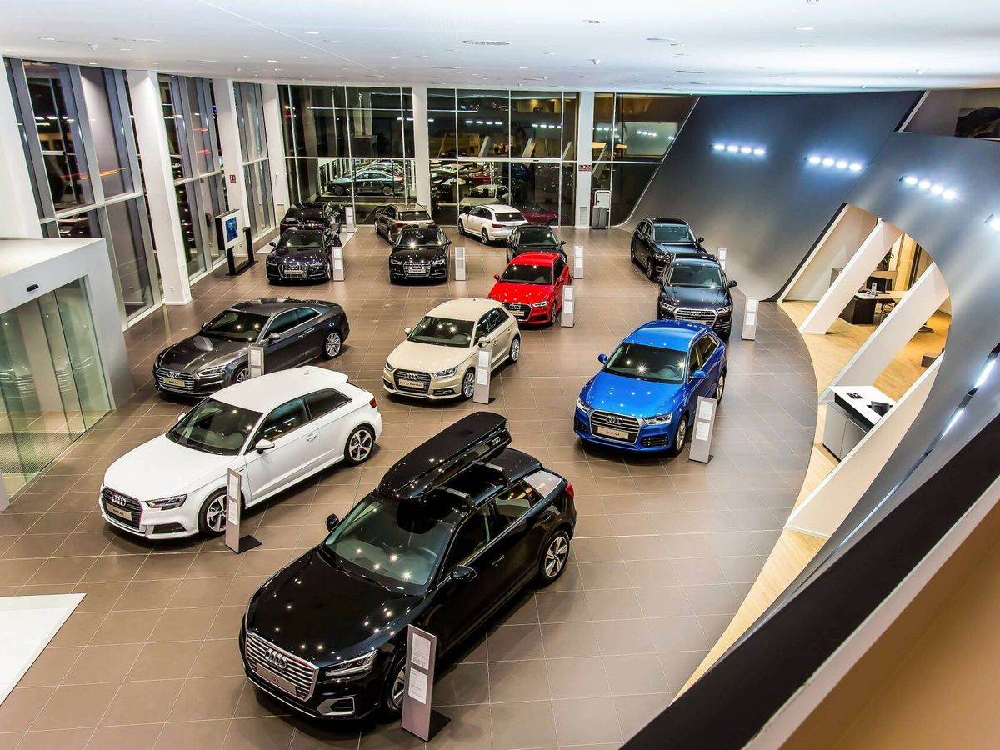

Cotxes i Automobilisme.
Benvinguda al món dels cotxes.
Descobreix la nostra selecció de vehicles d'última generació dissenyats per oferir-te una experiència de conducció inigualable.
- Toyota Corolla: Fiable i eficient, ideal per a la ciutat.
- Ford Mustang: Un clàssic americà amb potència i estil.
- Volkswagen Golf: Compacte, pràctic i amb una gran tecnologia.
